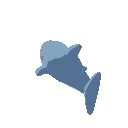
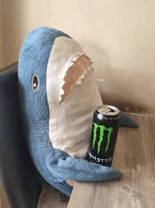
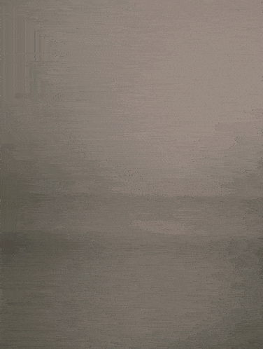

hello!


This is a project i did for an assignment! Its a maze game made in Construct 3.
This is another project i did for an assignment! Its a platformer game made in Construct 3.
This is a project i did for an assignment! Its top-down adventure game made in Unity!
A physics based demo for an assignment made in Unity Engine.
fancy seeing you here!
This is a vampire survivor styled game i was a part of! I helped with the character art, animations, and enemy attacks! (I did the enemies and stage on Captain Green's map! )
boo!

I went to Fengshan Primary.
CCA: Photography Club
I went to Bedok South Secondary.
CCA: Choir
I went to ITE Central.
CCA: Japanese Culture Appreciation Club
I am currently studying in Nanyang Polytechnic,
CCA: N/A
what a wonderful day!